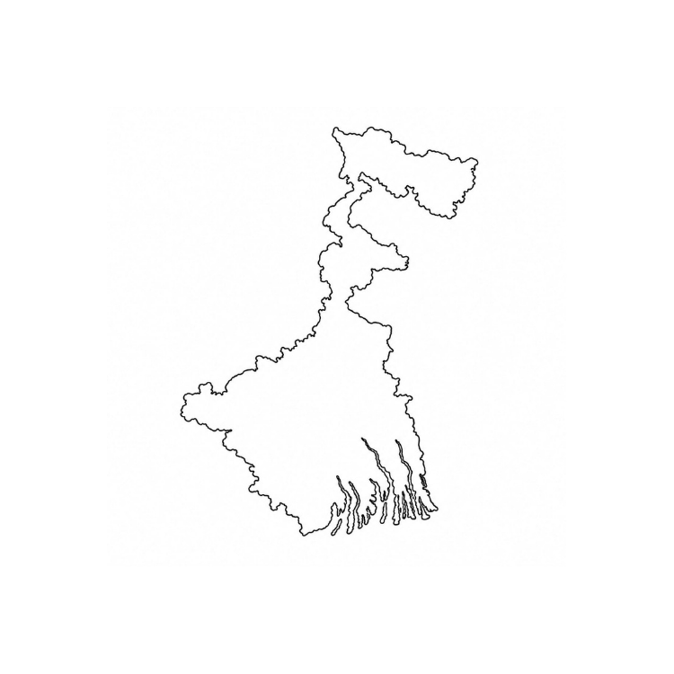

We are a people's movement working for the development and progress of West Bengal. Through unity, responsibility and collective participation, we aim to build a cleaner, stronger and more prosperous future.
Encouraging leadership, education and opportunities for young people to shape a better future.
Promoting environmental awareness and protecting nature for future generations.
Supporting communities and working towards peace, harmony and prosperity.
Promoting progress, innovation and responsible growth throughout West Bengal.
Jubo Bangla Samiti is a youth-led movement founded with the dream of building a cleaner, stronger and more prosperous West Bengal.
Through unity, integrity and collective action, we seek to promote social welfare, environmental awareness, youth empowerment and community development.
Although our journey has only recently begun, our commitment to positive change remains strong. We believe that even small efforts, when carried out with sincerity and determination, can create a lasting impact on society.

Established
Trees Planted
Events Conducted
Meetings Attended
Environmental awareness and plantation initiatives aimed at creating a greener and cleaner West Bengal.
Promoting education, awareness and opportunities for young minds and future generations.
Strengthening communities through cooperation, social responsibility and public participation.
Applications are currently open for individuals who wish to contribute towards the progress and development of West Bengal.
The leadership has released the official June Plan outlining future goals and priorities.
Jubo Bangla Samiti continues its journey with the aspiration of building stronger and more responsible communities.
Memories and milestones from our journey will be preserved here as we continue to grow and undertake new initiatives.
Photographs from tree plantation drives, awareness campaigns, social welfare programmes and future events will be displayed here.
Adhiraj Dev Varman Ghosh is the Founder of Jubo Bangla Samiti and a dedicated youth leader committed to community development, public service and youth empowerment.
Through responsible leadership and grassroots participation, he seeks to inspire positive change and encourage active citizenship among the youth of West Bengal.
His mission is to build stronger, cleaner and more responsive communities through unity, social awareness and collective action.
Leadership begins with responsibility and the willingness to serve society with sincerity and dedication.
Collective progress becomes possible when people work together with mutual respect and understanding.
Transparency, honesty and accountability are the foundations of meaningful and lasting change.
Together, We Rise. Together, We Build.
Jubo Bangla Samiti regularly publishes official plans, ideas and documents outlining our principles and future goals.
Jubo Bangla Samiti welcomes individuals who believe in youth empowerment, justice, education, environmental protection and responsible leadership.
If you share our vision for a stronger and more prosperous West Bengal, become a part of this growing movement.
At Jubo Bangla Samiti, we believe that progress begins when people are heard. Citizens are encouraged to share their concerns, ideas and suggestions.
Meaningful change becomes possible when communities come together. Your support strengthens future initiatives and social activities.
📧 Email
jubobanglasamiti@gmail.com
📍 West Bengal, India
We welcome ideas, suggestions and individuals who wish to contribute towards building a stronger and more prosperous Bengal.
STAY CONNECTED
Follow us and stay updated with our latest announcements, activities and initiatives.